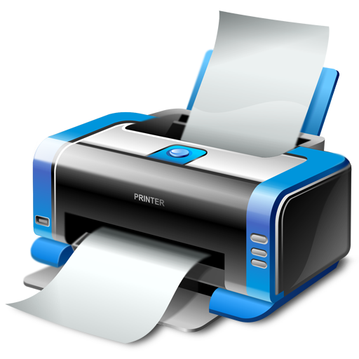
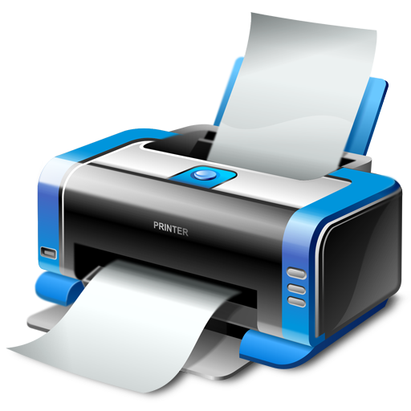
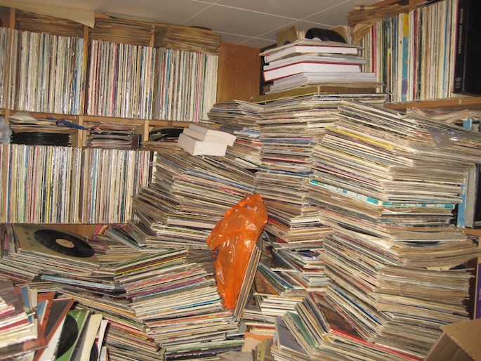
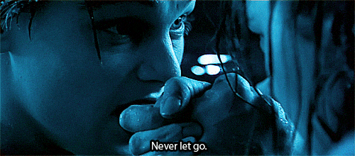
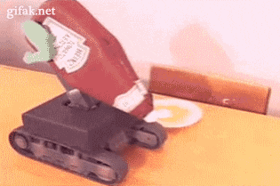
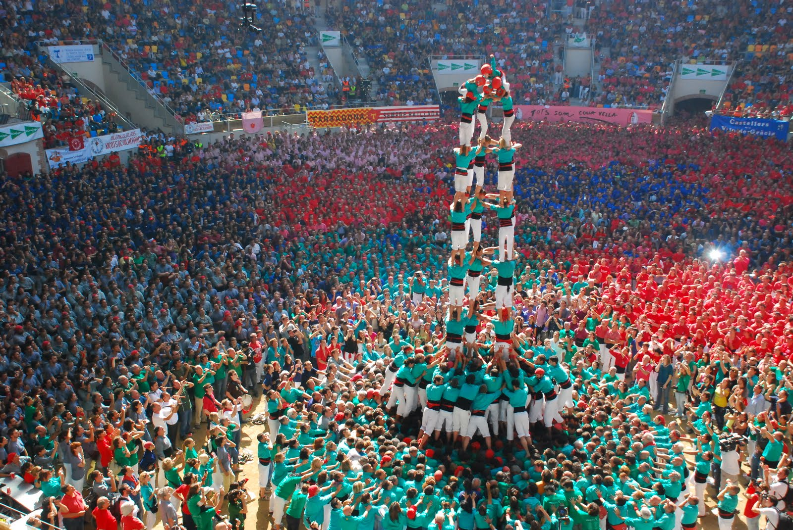

Git Excited
Created by Carlos Rivera
A World Without Git
Task: Backing up code


 

Problems?
Task: Versioning
v0.1, v0.5, v2.0, ...
Naming
- helloworld.py
- helloworld-2.py
- helloworld-FINAL.py
- helloworld-REAL-FINAL.py
Comment Blocks
class List():
def append():
...
def delete():
...
# class List():
# def append():
# ...
# def delete():
# ...
# class List():
# def append():
# ...
# def delete():
# ...
class BetterList():
def append():
...
def delete()
...
Stale Files
Keeping obsolete files around
Task: Experimenting
Steps:
(without breaking existing app!)
- Make copy of app directory
- Make your changes
- Deploy new app to test
- Toss it or manually merge into original directory (not fun!)
Task: Collaboration
What if you want to work on same file?
Same function?
Git to the rescue
Overview
- Git manages versions of your files/code
- Keeps track of changes throughout the life of a project
- commits are used to create snapshots of your project
- View what your codebase looked like at time of a commit
- Easy to undo changes. Hard to break stuff after a commit
- Easy to clone your project for experimenting (branches)
- Easily merge different versions of a file
Basic Workflow
- Set up directory with git
- Make some changes to files
- Looks good? commit. Otherwise, easy to undo all changes.
(This is all happening on your local computer)
Git Server

- Setup the same repo on a remote computer
- Not required, but very helpful
- Like DropBox, but only syncs to the cloud when you tell it
- After you're done with commits, you need to push your changes to the specific server
- Other developers can access that server to use or contribute to your project
- After new commits are pushed to server, everyone else needs to pull those changes
- A Git server already setup for you
- Community of developers
- Have official desktop application to make Git easier
- Research or contribute to other projects
- Online resume/portfolio for developers
- Free!
Big Projects on GitHub


Class Project
- Find the ChatterBox project by LasaComputerScience user on GitHub
- Claim an issue in the Issues tab
- Fork the project (create a clone of the project under your account)
- clone the project on your computer.
- Run app locally using App Engine (don't need to deploy it)
- Fix your issue
- Commit it (with comment!). Then push changes to GitHub (Sync)
- Create pull request in GitHub
- After accepted, go to your GitHub profile to view list of contributed projects